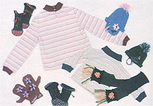
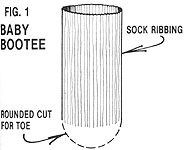
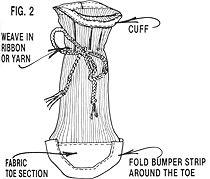
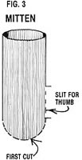
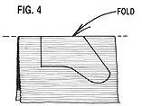
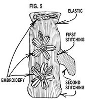
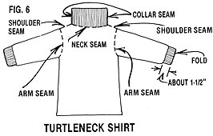
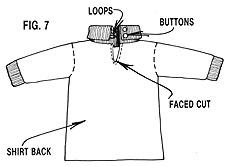
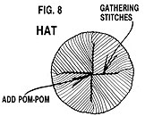
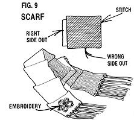

The idea of recycling stockings certainly isn't new, but here are several unique projects that may help you actually enjoy the otherwise "darn" dull job of dealing with battered footwear.
Suppose a friend called to inform you of a surprise baby shower . . . or your mate suggested an impromptu visit to your sister's family . . . or the youngsters came in from playing in the snow, rummaged through their bureaus, and informed you that there wasn't a dry mitten in the house. Would you worry because you're too short on fends to buy a gift for the shower . . . or to purchase a small token of affection for your nieces and nephews? Do you perhaps lack the knitting skill necessary to keep your family supplied with low-cost mittens?
Well, I used to feel a pang of panic in such situations, but now I just confidently head for my darning basket and retrieve all the old socks I can find. Then, an hour or two later, I'll have a passel of newly stitched clothing . . . to offer as gifts or to supplement my own children's wardrobes.
BOOTEE BASICS
To stitch up a pair of infant foot-warmers (which would be a welcome gift at just about any baby shower), you'll need a pair of adult-sized crew-neck socks, a scrap of material, and a bit of ribbon or yarn. Begin (keeping in mind that you'll need to perform each step twice to make a pair of bootees) by cutting a sock just below the ribbing, forming a curved toe (see Fig. 1).
Next, cut a strip of fabric that's 1" wide and long enough to form a border around the top of the ribbing (be sure to allow for some overlap when you measure it). Then fold under the raw edges of the material, and stitch the strip to the inside of the sock . . . overlapping the fabric where its ends meet. The resulting band folds down to form a cuff (as shown in Fig. 2).
With that done, trace the outline of the bootee's toe, add a seam allowance to this curve, and cut a half-circle of fabric to match. With the right side of the scrap facing out, stitch the half-round (folding its raw edges under as you go) to the upper layer of sock material.
Now, cut another 1"-wide strip of fabric that's long enough to encase the toe of the bootee, and secure it in place, being sure to stitch through all the thicknesses of the cloth and the sock. (This forms a "bumper" at the tip of the shoe.)
Finally, weave a length of ribbon or braided yarn through the ribbed portion of the sock, just above the baby's ankle, to form a tie.
These bootees will not only be warm, but also have the capability of "growing" with the child . . . because as the tot's foot gets larger, Mom or Dad can simply move the tie higher.
MITTENS IN MINUTES
If warm hands are what your youngsters are clamoring for, you can easily stitch up enough mittens so there'll always be a dry pair to replace those that soak through (in the process of winning snowball fights and such). To tackle this project, you'll need one crew-neck sock for each mitten (wool is best), some elastic thread, and a few strands of colorful yarn (if you'd like to embroider the handwear).
Start by making a curved cut across the sock below the neck (the distance will depend on the size of your child's hand) as you did when making the bootees. Be sure to save the excess material . . . you'll use some of it later on. (If it's necessary to shorten the glove, do that now.) Next, make a slit - to accommodate the thumb - starting from the cut end of the sock, as shown in Fig. 3.
Once that's taken care of, I generally spend a few moments embroidering designs on the main part of the mitten (you could add the decoration after the glove is completed if you'd prefer), making sure, as I do so, that the thumb incision faces right on one and left on the other of a pair. A simple, bright design adds an attractive - and durable - trim.
The next step will be to fabricate the thumb. To do so, cut a hooklike section, of the appropriate length and width, from the leftover sock material (I told you it'd come in handy!), as shown in Fig. 4. Then open the thumb up and pin its base to the top of the mitten slit, making certain that the right sides of the fabric are facing each other. Stitch these pieces together, overcast the seam edges to prevent the knitted material from unraveling, and turn the mitten wrong side out to complete the stitching and overcasting. Finally, while the mitt is still inside out, weave in an elastic thread at the wrist (see Fig. 5) and knot it.
Now, repeat the whole process with the second sock . . . turn the cozy warmers right side out . . . and let your child wear them with pride!
STITCH A TURTLENECK SHIRT
My children always seem to be growing out of their clothing, so I try to keep a step ahead by anticipating their needs ... and (of course!) recycling socks in the process.
To whip up a turtleneck shirt, you'll need a pair of crew-neck socks, about half a yard of stretchy knit fabric (the amount will vary, depending on your child's size), and a pattern. (You can purchase the last item, but I find that it's just as simple - and far less expensive - to trace my own from another shirt of the desired dimensions.)
After transferring the pattern to the cloth, cut the knit material into four sections: the front, the back, and two arms. That done, slice straight across each sock just below the ribbing. Then measure 3 inches up the ribbed section and cut again. This will give you two 3"-wide pieces (to use as cuffs) and two larger, top-of-the-sock sections (for the collar). Cut the latter pieces so that each is in the form of a flat rectangle, rather than a tube.
Then, with the right side of the shirt front and the wrong side of the sock rectangle together, sew the ribbing to the neck of the shirt, stretching the sock material slightly as needed. Once that's done, repeat the procedure - using the other rectangle - to form the shirt back, and overcast all the seams to prevent unraveling.
Next, with right sides facing, stitch the collar together at the side seams to form the actual turtleneck. Now,aurn the garment wrong side out and sew up the shoulder seams (see Fig. 6).
If the shirt material has plenty of "give", you can skip this paragraph and go on to the next step. But if you've used a minimum-stretch fabric, you may want to add an opening at the back of the pullover that will make it easier for the child to put on and take off. To do so, slit the turtleneck down the back and cut a couple of inches on down into the shirt, as shown in Fig. 7. Then fold the right sides of each collar half together, stitch the ragged edges shut, and turn the right sides out. Next, cut a piece of shirt fabric that's approximately 1" wide and 4" long (a bias strip will work best). With the right sides together, stitch this scrap down one side of the cut and up the other. Turn the facing to the inside, tuck the raw edge under, and sew again. Finish this portion of the job by attaching loops and buttons to the collar opening.
Once the neck is completed, turn the garment inside out and- - with right sides together - attach the arms to the shirt. Then stitch the side seams and the underarm junctions.
With that out of the way, go on to fold the 3" sock sections (which you've reserved for the cuffs) in half, and attach them to the arms (as in Fig. 6), making certain - before you do so - that the right sides of the fabric are together. Finally, machine-hem the shirt bottom and overcast any raw edges.
A HANDMADE HEAD-WARMER
Hats are a wintertime must up here in Maine, and it's always good to have a few extras on hand.
You'll need one pair of socks and some decorative yarn to make a child-sized "stocking cap". Begin by cutting the socks off just below the crew necks, as you did when making the turtleneck shirt. Then slit each tube open and sew the resulting rectangles - right sides together - around the three cut edges, leaving about an inch open at the bottom of the seam on each side. Now, overcast the seam . . . turn the cap right side out . . . flip the 1" brim up . . . and hand-stitch its seams closed.
Next, gather the top of the hat in an X-pattern (as shown in Fig. 8) and fasten a yarn pom-pom in place. Use a few more scraps of yarn to make a pair of braided ties, and then set these fastenings aside for the moment.
Now, find the foot portions of the socks and cut a half-circle, with its diameter on the fold , in each one. These will serve as ear flaps (see the photo), so adjust their size to the ears in question. Fold each flap with its right side in . . . put one of the braided ties between the halves so that just its tip protrudes at the centerpoint of the curve . . . and stitch around the semicircle, leaving a small opening at the end of the seam so that you can turn the half-moon right side out. Attach the earmuff to the inside of the hat, just above the fold of the brim.
As a last step, embroider a design on the cap if you like, then tie it to your tot's chilly head.
SCRAP TOGETHER A SCARF
By now you've probably completed quite a collection of children's clothing, but you may be wondering what to do with the unused sock feet that are beginning to pile up. Well, ponder no longer . . . simply sew the extras into a warm scarf.
To make a child-sized muffler, you'll need the arch sections from at least five pairs of socks. They don't need to match (in fact, a variety of colors makes for a more attractive scarf).
Cut the heel and toe from each sock, leaving a tubular section. Turn one of these arch portions wrong side out and pull it over a right-side-out one (see Fig. 9). Stitch one end closed (through all thicknesses), overcast the seam, and turn the outer tube right side out again . . . thus forming two joined scarf links. Repeat this process until all the pieces are attached.
If decoration is desired, you can embroider the end squares (see Fig. 9). Then fold the raw edges under . . . hand-stitch the end seams shut . . . and add fringe to complete the scarf.
DESIGN YOUR OWN
Once you've made a few of the projects described in this article, you'll likely think of additional items that can be made from old socks. Some of my other favorites include drawstring bags, new feet for old pajamas, cuffs for worn coats, a tube top for summer wear, a cold-weather face mask, potholders, stuffed draft stoppers, an eyeglass case, a shoe polisher, and a washcloth (filled with bits of soap). In fact, recycled socks are in such demand at our house that I'm tempted to give up darning for good!
|
|
 |
 |
|
 |
 |
 |
|
 |
 |
 |
|
 |
 |
|